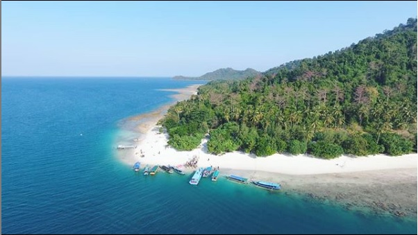

Way LALAAN

Air Terjun Way Lalaan terletak di kaki Gunung Tanggamus
dan merupakan air terjun bertingkat dengan jarak kurang lebih 200 m.
Nama Air terjun ini berasal dalam bahasa Lampung dari kata “Way”
yang artinya sungai dan Lalaan yang bermuara ke Teluk Semangka.
Tumpahan air terjun ini memiliki ketinggian ± 11 m.
Pantai Pahawang

Pulau di lampung ini di sebut juga sebagai salah satu spot surga wisata
snorkeling yang indah di Indonesia, yaaahh ga kalah lah sob sama Raja Ampat mah.
Disini terdapat penduduk, penginapan dan juga fasilitas lainnya. Luas pulau ini kurang lebih 1000 hektar dan di huni oleh kurang lebih 1000 kepala keluarga.
Di Pahawang besar sudah terdapat fasiltias umum seperti puskesmas, dan juga sekolah.
Biasanya pengunjung yang wisata ke pulau pahawang menginap di pulau pahawang besar.